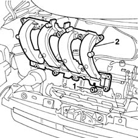

1072B14 inlet manifold - r+r and replace seal with air conveyor/box removed
- Path
- Procedures > 10 ENGINE UNIT > 1072 INLET AND EXHAUST MANIFOLDS > 1072B inlet manifolds > 1072B14 inlet manifold - r+r and replace seal with air conveyor/box removed
- Kind
- repair procedure (removal / refitting; the operation number is the code)
- Applies to
- engines: 1.6 16v; all production periods
- Interactive page
- https://sloeber94.github.io/elrnDB-fMltpl/en/#/2891280
Applies to: engines: 1.6 16v; all production periods
 Removing
Removing
 Refitting
RefittingWith the ignition key in the OFF position, disconnect the battery negative terminal.
1056B61 single fuel manifold with injectors - r+r with air conveyor/box removed
Take the wiring channels in the lower part of the manifold out of the intake manifold.
1. Unscrew the nuts securing the manifold to the cylinder head.
2. Remove the intake manifold.

Applies to: engines: 1.6 16v; all production periods
Refitting
RemovingFit the air intake manifold to the cylinder head.
tighten the bolts and nuts securing the intake manifold to the cylinder head.
 | Fastening | Component | Ø | Value (daNm) |
|---|---|---|---|---|
- | Nut | INLET MANIFOLD | M8 | 2.5 |
Position the wiring channels and secure to the intake manifold.
1056B61 single fuel manifold with injectors - r+r with air conveyor/box removed
Connect the battery negative terminal.
Topics linked from this page (1)
Topics that link to this page (7)
- 1016B20 lh cylinder head extension - replace gasket
- 1016B22 lh cylinder head extension - r r with timing belt removed - replace gasket
- 1016C10 cylinder head - r + r and replace gasket
- 1028H10 connecting rod and piston set - r r
- 1028H20 piston with connecting rod - r r
- 1036G10 camshaft controlling exhaust valves in top head - r + r with top head removed - includes replacement of top head
- 1072B10 inlet manifold - r + r and replace seal